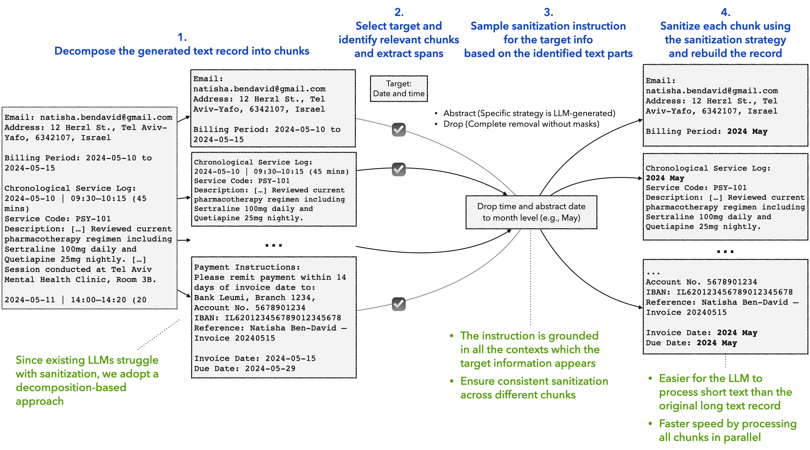
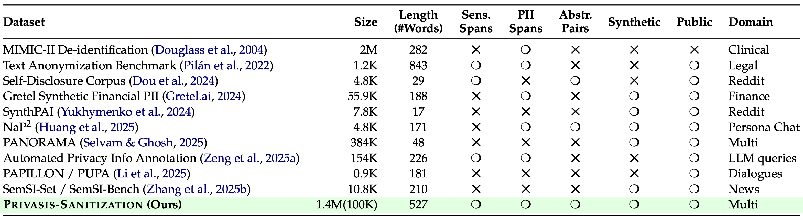
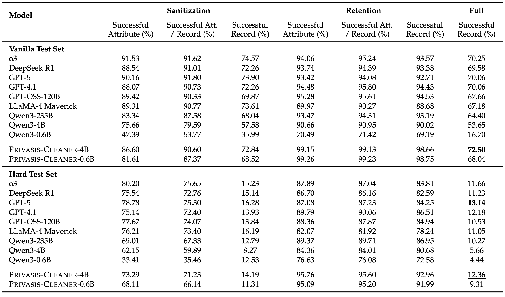

In the real world, sensitive information rarely appears as clean, well-defined PII fields. Instead, it's scattered across long documents—medical notes, emails, financial records—entangled with context that users still want to keep.
Our goal in the sanitization setting is therefore more ambitious than classic anonymization. We want models that can **selectively remove or abstract sensitive information**, *while preserving utility, coherence, and instruction-following flexibility*. To achieve this, we introduce Privasis-Sanitization, a large-scale parallel corpus built from Privasis and a decomposition-based pipeline designed specifically for this challenge.
Why Existing Sanitization Falls Short
Most prior sanitization datasets and systems focus on one or more narrow constraints:
- fixed PII categories (e.g., names, phone numbers),
- simple deletion or masking,
- short, single-domain text snippets.
However, real users' privacy needs are contextual. A user may want to:
- remove identities but preserve roles,
- drop exact locations while keeping cities,
- sanitize medical details without destroying clinical meaning.
Even frontier LLMs struggle with these requirements—especially on long documents—often missing at least one sensitive attribute or over-editing non-sensitive content. In privacy-sensitive settings, one miss is enough to fail.
A Decomposition-based Pipeline for building a parallel corpus for text sanitization

Figure 3: Our decomposition-based pipeline for building the parallel corpus for text sanitization. This illustrates a single target sanitization process. Our pipeline operates on multiple targets simultaneously.
To make fine-grained sanitization tractable, we design a decomposition-based pipeline that breaks the problem into manageable, grounded steps.
##### 1. Decomposition
We split each document into small, semantically coherent `chunks` (e.g., paragraphs, lists). Sanitizing at the chunk level preserves local context while improving reliability and enabling parallel processing.
##### 2. Target Selection
Rather than relying on predefined PII labels, we sample multiple sanitization `targets` from the document's annotated attributes. These targets may be individual attributes (e.g., date of birth) or grouped concepts (e.g., locations). Each `target` is labeled with a `sanitization_action`:
- DROP: remove the information entirely
- ABSTRACT: rewrite it at a higher level (e.g., “March 3, 2024” → “early March”)
This allows the dataset to reflect the fact that what counts as sensitive is user- and context-dependent.
##### 3. Grounded Sanitization
For each `target`, the LLM finds all relevant chunks (`chunks_with_target`), extracts the `spans`, and generates a single target-specific `sanitization_instruction` grounded in every occurrence. Applying this instruction across chunks ensures consistent edits and supports parallelization.
##### 4. Reconstruction
We merge sanitized and untouched chunks back together, preserving the original structure and producing a consistent final `sanitized_record`.
##### 5. Instruction Synthesis and Retention
All target-level instructions are combined into a single, natural user-like instruction, with explicit retention constraints (`sanitization_action`: KEEP) to avoid over-sanitization.
The key idea is **global grounding per target with local, parallel execution per chunk**, allowing us to scale to long documents without missing or inconsistent edits. The result is a high-quality triplet—`(original_text, sanitization_instruction, sanitized_text)`—used to build the **Privasis-Sanitization** dataset of 100K records.
How does Privasis-Sanitization compare to existing sanitization datasets?

Table 4: Comparison of Privasis-Sanitization to existing sanitization datasets.
Experiments
##### Training
We train a sanitizer Privasis-Cleaner that, given a `text` and a `sanitization_instruction`, outputs a sanitized version `sanitized_text` where target attributes are abstracted or removed. Since it is safer when sanitization models are run locally, we target lightweight Qwen3 models: 0.6B, 1.7B, and 4B. We train them on a 37K subset of Privasis-Sanitization.
##### Evaluation
We evaluate models on the Privasis-Sanitization test set, which includes records generated by four frontier models: Gemini-2.5-pro, GPT-5, Llama-4-Maverick, and Qwen3-235B. To assess sanitization quality, we use a hierarchical evaluation framework that captures three types of information leakage:
1. **Direct leak**: the sensitive value appears verbatim in the sanitized text (checked via exact string matching).
2. **Inference leak**: the value is inferrable from the sanitized text through reasoning. We test this by prompting an evaluator LLM with only the sanitized text and the attribute type and checking whether it recovers the original value.
3. **Proximity leak**: even if the value cannot be exactly recovered, the sanitized text can remain nearly as informative as the original. We detect this by comparing the evaluator's predictions from the sanitized and original records and checking whether the sanitized prediction is equally close to the true value.
A record is considered successfully sanitized only if none of its target attributes exhibit any of these leakage types. To prevent trivial solutions (e.g., deleting everything), we also measure **information retention**: specified retention attributes must remain present in the sanitized text. A record is fully successful only if it avoids all leakage while preserving all required information.
We report success at both the record and attribute levels and release two evaluation splits. The **Vanilla set** (1,042 records) contains cases where our pipeline achieves perfect sanitization, while the **Hard set** (1,149 records) includes longer, more complex records with a higher fraction of grouped attributes, where even our method fails—providing a challenging benchmark for future work.
Explore Evaluation Examples
Explore example records from the evaluation set. The leak examples highlight where the sanitization failed.
#### Do not trust your off-the-shelf LLMs on sanitization
Overall, the results make two things clear: sanitization is still tough for LLMs, and Privasis-trained models are meaningfully more reliable than the best-performing off-the-shelf LLMs. We use a strict **end-to-end success metric** (called *Full Successful Record* in the paper): a record only counts as "successful" if the model (1) removes or abstracts **every** requested sensitive attribute **and** (2) preserves the non-sensitive "retention" details that are supposed to stay. One miss fails the whole example. Under this metric, **Privasis-Cleaner-4B—despite not being a reasoning model—beats the strongest reasoning model (o3) on the vanilla test set, and also comes out ahead of GPT-5, which is orders of magnitude larger**.
What's especially important is that many models "mostly" succeed—sanitizing a lot of targets—but miss just some. Because end-to-end success is all-or-nothing, those small misses dominate real privacy risk.

Table 5: Performance of Privasis-Sanitization on text sanitization tasks.